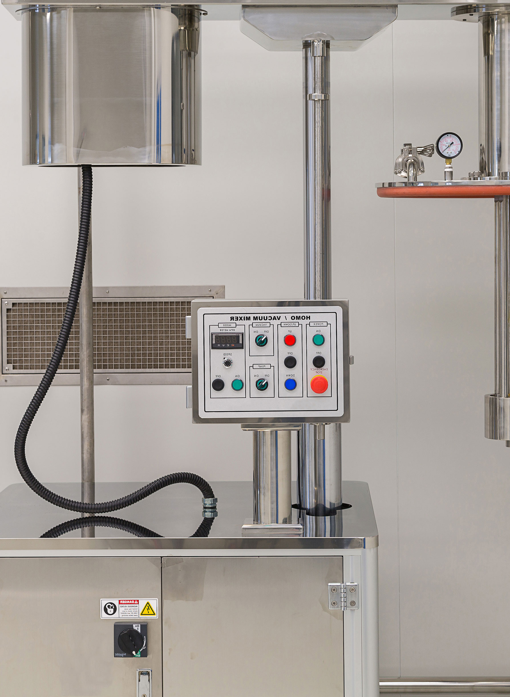
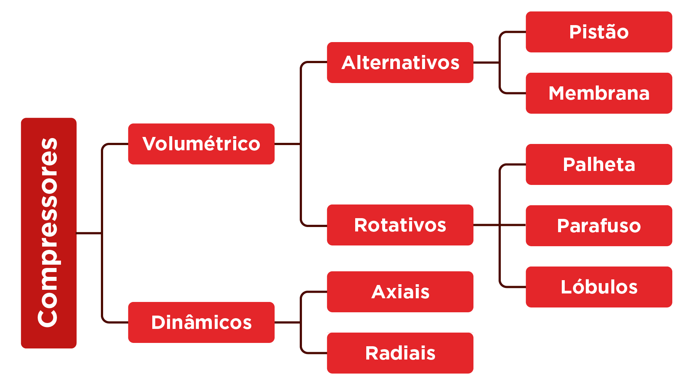

Geração do ar comprimido



Nesta aula, os seguintes tópicos serão explorados:
tópico
Tópico 1: Princípios de funcionamento dos compressores
tópico
Tópico 2: Tipos de compressores (alternativos, rotativos, centrífugos)
tópico
Tópico 3: Dimensionamento e desempenho energético


Princípios de funcionamento dos compressores
Olá, estudante! Depois de compreender como o ar se comporta do ponto de vista físico e termodinâmico, chegou o momento de entender como esse ar comprimido é efetivamente gerado na indústria. Tudo começa em um equipamento fundamental para a pneumática: o compressor.
De forma simples, o compressor é o elemento responsável por transformar energia elétrica ou mecânica em energia pneumática, elevando a pressão do ar aspirado do ambiente e tornando-o adequado para uso em sistemas industriais.
O papel do compressor em um sistema pneumático
De acordo com Fialho (2011) e Prudente (2015), um sistema pneumático completo é normalmente composto por três grandes blocos:
O compressor está no coração da central de compressão (Figura 1), sendo o responsável por aspirar o ar atmosférico, comprimi-lo e enviá-lo para os próximos estágios do sistema, como resfriamento, secagem e armazenamento.

Como ocorre a compressão do ar
O princípio básico da compressão consiste em reduzir o volume do ar, provocando o aumento da sua pressão (Rollins, 2004). Esse processo está diretamente ligado às leis dos gases estudadas na aula anterior.
Na prática, o compressor:
- Aspira o ar do ambiente, por meio de um filtro de admissão, removendo partículas sólidas.
- Reduz o volume ocupado pelo ar, por meio de elementos mecânicos (pistões, palhetas, parafusos ou rotores).
- Eleva a pressão e a temperatura do ar, como consequência direta da compressão.
- Descarga o ar comprimido para o sistema de tratamento e armazenamento.
Esse aumento de temperatura explica por que o ar comprimido não pode ser enviado diretamente para a rede, exigindo etapas posteriores de resfriamento, armazenamento, remoção de umidade e filtragem (Prudente, 2015).
Conexão
Energia envolvida no processo de compressão
Do ponto de vista energético, o compressor atua como um conversor:
Energia elétrica → Energia mecânica → Energia pneumática
Esse processo, embora eficiente, não é isento de perdas. Parte da energia fornecida ao compressor é dissipada em forma de calor, ruído e atrito mecânico (Daines; Daines, 2018). Por isso, o correto dimensionamento e a escolha adequada do tipo de compressor impactam diretamente:
Compressão e temperatura: um efeito inevitável
Sempre que o ar é comprimido, ocorre elevação de temperatura. Quanto mais rápida for a compressão, mais próximo o processo estará de uma compressão adiabática, onde há pouco tempo para troca de calor com o ambiente (Moran, 2020).
Na saída do compressor, o ar pode atingir temperaturas elevadas, o que:
-
Aumenta sua capacidade de reter vapor d’água.
-
Favorece a formação de condensado após o resfriamento.
-
Pode comprometer tubulações e componentes se não houver controle adequado.
É exatamente por esse motivo que, logo após o compressor, são instalados dispositivos como resfriadores posteriores, separadores de condensado e purgadores, temas que serão aprofundados no próximo conteúdo.
Importância do princípio de funcionamento para a prática profissional
Entender o princípio de funcionamento dos compressores permite a você:
Mas pensando um pouco, se o compressor é o ponto de maior geração de calor e umidade do sistema, o que acontece quando ele é subdimensionado ou operado fora das condições recomendadas?
Quando o compressor é subdimensionado ou operado fora das condições recomendadas, ocorre aumento excessivo de temperatura e maior retenção de umidade no ar comprimido (White, 2018).
Isso favorece a formação de condensado na rede, acelera o desgaste dos componentes, aumenta o consumo de energia e reduz a eficiência e a confiabilidade do sistema pneumático, podendo resultar em falhas operacionais e maiores custos de manutenção (Rollins, 2004).

Observe um compressor industrial (ou imagens/vídeos técnicos) e identifique o ponto de aspiração do ar, o elemento de compressão, a saída do ar comprimido e a presença de resfriador ou separador de condensado.
Essa observação ajuda a conectar a teoria diretamente com a realidade do chão de fábrica.
Neste tópico, você compreendeu que o compressor é o gerador de energia pneumática do sistema, responsável por aspirar, comprimir e fornecer o ar comprimido para a planta industrial. A compressão está diretamente associada à elevação de pressão e temperatura, justificando a necessidade de etapas posteriores de tratamento.
No próximo tópico, avançaremos para os tipos de compressores utilizados na indústria, analisando suas características, aplicações e limites de operação.
Uma fábrica implantou um novo compressor e, após algumas horas de operação, percebeu aumento de falhas em válvulas e atuadores, além de presença de água no fundo de filtros e pontos baixos da tubulação. Considerando o princípio de funcionamento do compressor e o comportamento do ar durante a compressão, assinale a alternativa que melhor explica a causa mais provável desse problema.
- A presença de água indica exclusivamente defeito no manômetro, sem relação com compressão.
- O ar comprimido sai do compressor mais frio, impedindo a condensação na rede.
- O compressor reduz a pressão do ar e, por isso, aumenta a umidade relativa.
- Durante a compressão, o ar tende a aquecer e reter mais vapor; ao resfriar na rede, ocorre condensação se não houver separação/remoção adequada.
- A condensação ocorre apenas quando o ar está em vácuo, o que não acontece em pneumática.
A alternativa D é a correta.
Justificativa: A compressão eleva a temperatura do ar e aumenta sua capacidade de carregar vapor d’água. Quando esse ar esfria após a compressão (em tubulações e reservatórios), o vapor pode se condensar, formando água líquida e causando falhas e desgaste se não houver tratamento adequado.

Tipos de compressores (alternativos, rotativos, centrífugos)
Estudante, agora que você já entendeu como ocorre a compressão do ar e qual é o papel do compressor dentro do sistema pneumático, é hora de responder a uma pergunta muito comum na prática industrial:

Por que existem tantos tipos diferentes de compressores?
A resposta está diretamente ligada às necessidades de pressão, vazão, regime de trabalho, custo energético e aplicação industrial. Não existe um compressor “melhor” em termos absolutos, mas sim o mais adequado para cada situação.
Classificação geral dos compressores
De acordo com Prudente (2015) e de forma didática, os compressores utilizados em pneumática industrial podem ser classificados em dois grandes grupos (Figura 2):
- Compressores volumétricos.
- Compressores dinâmicos (ou turbocompressores).
Essa classificação está relacionada à forma como a energia é transferida ao ar durante o processo de compressão.

Compressores volumétricos
Filho e Santos (2018) explicam que os compressores volumétricos funcionam com base em um princípio simples, aprisionam uma certa quantidade de ar e reduzem seu volume, elevando a pressão.
Eles são os mais utilizados em sistemas pneumáticos industriais, especialmente quando se deseja pressão mais elevada com vazões moderadas.
Compressor alternativo de pistão
Os compressores alternativos utilizam pistões que se movimentam dentro de cilindros, realizando os ciclos de admissão, compressão e descarga do ar (Prudente, 2015).
Características principais:
São amplamente utilizados na indústria.
Podem operar em um, dois ou três estágios, conforme a pressão desejada.
Possuem válvulas de admissão e descarga.
Podem atingir pressões elevadas.
Aplicações típicas, são oficinas, pequenas e médias indústrias e sistemas com demanda intermitente. Quanto maior for o número de estágios, menor é o esforço térmico em cada etapa de compressão e isso impacta diretamente na eficiência e na vida útil do equipamento.
Compressor alternativo de membrana
Fialho (2011) define uma variação do compressor alternativo no qual o pistão aciona uma membrana flexível.
Destaques:
- O ar não entra em contato com partes lubrificadas.
- Evita contaminação por óleo.
- Muito utilizado em indústrias alimentícias, farmacêuticas e químicas.
- Pressões moderadas.
Compressores rotativos
Nos compressores rotativos, a compressão ocorre de forma contínua, sem movimentos alternados, reduzindo a vibração e o ruído.
De acordo com Prudente (2015), os principais tipos são:
Clique em “+” e confira as informações.
Compressor rotativo de palhetas
- Possui rotor excêntrico com palhetas móveis.
- A rotação reduz progressivamente o volume do ar.
- É robusto e confiável.
- Necessita de lubrificação constante.
Compressor rotativo de parafuso
- Utiliza dois rotores helicoidais.
- Reduz o volume do ar de forma progressiva e contínua.
- Trabalha com altas vazões.
- Opera com menor nível de ruído.
- Muito comum em indústrias de médio e grande porte.
Compressor rotativo de lóbulos
- Possui dois rotores com lóbulos que giram em sentidos opostos.
- Não realiza compressão interna progressiva, apenas desloca o ar.
- A elevação de pressão ocorre ao descarregar o ar em um sistema pressurizado.
- Pode operar sem lubrificação na câmara de compressão.
- Indicado para vazões moderadas e pressões relativamente baixas.
Na prática industrial, o compressor de parafuso é frequentemente escolhido quando o sistema exige operação contínua e maior eficiência energética.
Compressores dinâmicos (centrífugos)
Os compressores dinâmicos, também chamados de turbocompressores, funcionam de forma diferente dos volumétricos (Filho; Santos, 2018).
Nesse caso:
- O ar recebe energia cinética de um rotor com lâminas.
- Essa energia é convertida em pressão em um difusor.
- Operam com altíssimas vazões e pressões mais baixas.
São divididos em:
- Axiais.
- Radiais (centrífugos).
Aplicações típicas são grandes plantas industriais, sistemas com consumo elevado e contínuo de ar e processos onde a vazão é mais crítica que a pressão.
Comparação prática entre os tipos
De acordo com Prudente (2015), em termos gerais:
-
Compressores alternativos → alta pressão, menor vazão, regime intermitente.
-
Compressores rotativos → vazão contínua, boa eficiência, uso industrial amplo.
-
Compressores centrífugos → altíssima vazão, grandes sistemas, baixa pressão relativa.
Essa comparação é essencial para o próximo tópico, onde você aprenderá como dimensionar corretamente um compressor, evitando desperdício de energia e falhas operacionais.
Conexão
Neste tópico, você conheceu os principais tipos de compressores utilizados na pneumática industrial, suas características e aplicações. Cada tipo atende a necessidades específicas, e a escolha correta impacta diretamente no desempenho e no consumo energético do sistema.
No próximo tópico, avançaremos para o dimensionamento e o desempenho energético dos compressores, conectando teoria, cálculo e prática industrial.
Uma indústria precisa operar com pressão em torno de 7 bar e demanda de ar elevada e praticamente contínua ao longo do turno. O objetivo é reduzir ruído, vibração e melhorar a eficiência energética. Considerando as características dos tipos de compressores, qual alternativa indica o tipo mais adequado para esse cenário?
- Compressor alternativo de pistão, por ser o mais silencioso e indicado para vazões muito altas.
- Compressor rotativo de parafuso, por oferecer fornecimento contínuo, boa eficiência e ampla aplicação industrial.
- Compressor centrífugo, por ser mais indicado para pressões elevadas com baixa vazão.
- Compressor de membrana, por ser o mais indicado para grandes vazões contínuas em qualquer pressão.
- Compressor rotativo de palhetas, por ser sempre a melhor opção para altíssimas vazões e baixas pressões.
A alternativa B é a correta.
Justificativa: Sistemas com demanda contínua e vazões elevadas costumam se beneficiar de compressores rotativos (especialmente parafuso), que apresentam operação mais estável, menor vibração e boa eficiência energética na faixa típica de pneumática industrial.
Dimensionamento e desempenho energético
Estudante, depois de compreender os princípios de funcionamento e os diferentes tipos de compressores, chegamos a um ponto central da prática profissional em pneumática: o dimensionamento correto do compressor. Essa etapa é decisiva para garantir desempenho adequado, eficiência energética e confiabilidade do sistema.
Um compressor mal dimensionado pode resultar em quedas de pressão, aumento do consumo de energia, excesso de manutenção e até falhas frequentes nos equipamentos pneumáticos.
A importância do dimensionamento correto
Em sistemas pneumáticos industriais, o compressor costuma ser o principal consumidor de energia elétrica. Por isso, o dimensionamento influencia diretamente:
Para refletir: Um compressor maior sempre resolve o problema? Nem sempre. Um equipamento superdimensionado também pode operar ineficientemente e desperdiçar energia, além de ter um custo de investimento muito maior.
Dimensionamento/Escolha de compressores
De acordo com Prudente (2015) e Rollins (2004), a correta escolha de um compressor deve ser baseada em vazão, pressão e tipo de acionamento.
Vazão requerida do sistema e acionamentos
O primeiro passo no dimensionamento consiste em determinar a vazão total de ar necessária para alimentar todos os consumidores pneumáticos.
Essa vazão depende de:
-
Número de atuadores.
-
Consumo individual de cada equipamento.
-
Regime de funcionamento (contínuo ou intermitente).
-
Simultaneidade de uso.
De acordo com Prudente (2015), no valor da vazão efetiva deve ser incrementado um coeficiente de inserção do compressor, que assume valores entre 0 e 1 (ou 0% a 100%) e indica o percentual de tempo em que o compressor está comprimindo ar.
O coeficiente de inserção do compressor (\(I\)), em \(\% \), pode ser calculado por meio da equação:
$$ I = \frac{T_t}{T_t + T_s} \cdot 100 $$
onde \({T_t}\) é o tempo de trabalho do compressor (minutos) e \({T_s}\) é o tempo de parada (minutos).
Prudente (2015) também orienta que, para o acionamento por motor elétrico, a inserção é de 50% (por exemplo, 30 minutos de trabalho e 30 minutos de parada por hora). Enquanto para acionamento por motor de combustão é de 70%.
O acionamento elétrico é o mais comum e utilizado, já o acionamento por combustão é aplicado em situações em que a alimentação elétrica não é possível, como, por exemplo, em regiões rurais ou isoladas.
Na prática industrial, também se aplica um fator de ampliação (\(K\)), geralmente entre 1,2 e 1,5, para considerar:
- Vazamentos inevitáveis.
- Expansões futuras do sistema.
Dessa forma, a vazão efetiva do compressor (\(Q\)) pode ser calculada, em \({m^3}/h\) ou na unidade adotada pelo catálogo, pela equação:
$$ Q = \Sigma Q_c \cdot 100 \cdot \frac{K}{l} $$
onde \(\Sigma {Q_c}\) é soma do consumo das cargas presentes na rede ( ou outra unidade adotada), como cilindros, motores e outros equipamentos), \(I\) é o coeficiente de inserção (\(\% \)) e \(K\) é o fator de ampliação (Prudente, 2015).
Pressão de trabalho e relação de compressão
Além da vazão, deve-se considerar a pressão de trabalho necessária no ponto mais crítico da instalação. A partir disso, define-se a relação de compressão, que relaciona a pressão absoluta de descarga com a pressão absoluta de aspiração (Fialho, 2011).
Relações de compressão elevadas:
- Aumentam o esforço mecânico do compressor.
- Elevam a temperatura do ar comprimido.
- Reduzem a eficiência energética.
Por esse motivo, aplicações que exigem pressões mais altas utilizam frequentemente compressores de múltiplos estágios, reduzindo o esforço térmico em cada etapa.
A Figura 3 apresenta um ábaco para seleção do tipo de compressor, utilizando as informações dispostas até o momento.

Regime de funcionamento e desempenho energético
Outro fator importante é o regime de funcionamento do compressor. Compressores alternativos operam, em geral, em regime intermitente, enquanto compressores rotativos e centrífugos são mais adequados para operação contínua (Prudente, 2015).
O desempenho energético do sistema está diretamente relacionado:
- Ao tipo de compressor.
- À pressão de operação.
- O controle de carga (liga/desliga, carga/descarga, entre outros).
Em muitos casos, reduzir a pressão de trabalho em apenas 1 bar pode representar economia significativa de energia ao longo do tempo.
Subdimensionamento × superdimensionamento
Segundo Fialho (2011), o subdimensionamento do compressor pode levar à:
- Quedas frequentes de pressão.
- Funcionamento contínuo do compressor.
- Aquecimento excessivo.
- Redução da vida útil.
Já o superdimensionamento do compressor pode gerar:
- Maior custo inicial.
- Operação fora da faixa ideal e ciclos ineficientes.
- Desperdício de energia.
Por isso, o objetivo do dimensionamento correto é encontrar o equilíbrio entre desempenho, eficiência e custo.
Conexão
Neste tópico, você aprendeu que dimensionar um compressor vai muito além de escolher um equipamento mais potente. É necessário analisar vazão, pressão, regime de funcionamento e desempenho energético, utilizando critérios técnicos que garantam eficiência e confiabilidade ao sistema pneumático.
Na próxima aula, avançaremos para o Tratamento e Redes de Distribuição. Bons estudos e até lá!
Durante o pré-dimensionamento de uma central de ar comprimido, um projetista calculou a soma do consumo dos equipamentos da rede como \(\sum {Q_c} = 204\;\)m³/h. Para considerar vazamentos e futuras ampliações, adotou \(K = 1,3\). O acionamento será por motor elétrico, com coeficiente de inserção típico \(I = 0,5\). Utilizando a equação:
Calcule a vazão e assinale a alternativa que apresenta a vazão mínima aproximada do compressor.
- 132,6 m³/h.
- 884,11 m³/h.
- 480,9 m³/h.
- 265,2 m³/h.
- 530,4 m³/h.
A alternativa E é a correta.
Justificativa: A vazão requerida pode ser estimada por . Substituindo valores, obtém-se m³/h.
Sua próxima etapa é assistir à videoaula, onde você poderá ver os conceitos em ação e ampliar sua compreensão. Essa é uma ótima oportunidade para reforçar o aprendizado.
Assista a videoaula
DAINES, J. R.; DAINES, M. J. Fluid Power: Hydraulics and Pneumatics. 3. ed. [S. l.]: Goodheart-Willcox, 2018.
FIALHO, A. B. Automação pneumática: dimensionamento e análise de circuitos. 7. ed. São Paulo: Érica, 2011.
FILHO, E. S. D. S.; SANTOS, B. K. Sistemas hidráulicos e pneumáticos. Porto Alegre: Sagah, 2018.
MORAN, M. J. Fundamentals of Engineering Thermodynamics. [S. l.]: Wiley, 2020.
PRUDENTE, F. Automação industrial pneumática: teoria e aplicações. Rio de Janeiro: LTC, 2015.
ROLLINS, J. P. Manual de ar comprimido e gases. 1. ed. São Paulo: Pearson, 2004.
WHITE, F. M. Mecânica dos fluidos. 8. ed. Porto Alegre: AMGH, 2018.
Parabéns!
Você acaba de concluir uma etapa importante da sua jornada. Agora é hora de seguir em frente!